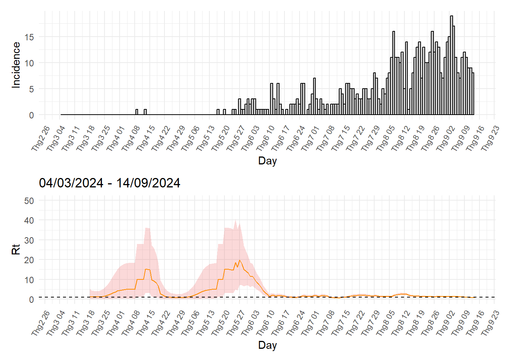
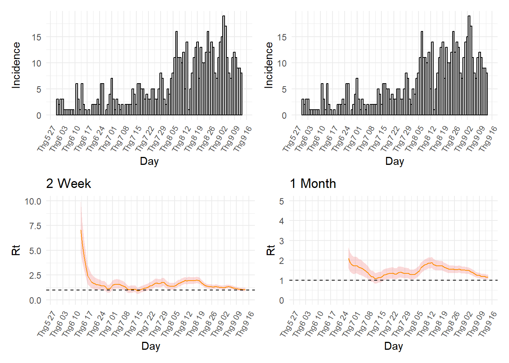

Dữ liệu hiện có không thể tính được Serial interval theo định nghĩa. Do đó, sẽ dựa vào y văn và chọn Serial interval có trung bình là 14,5 ngày và độ lệch chuẩn là 3,25 ngày ((worden2020?)).
2 Clean data
Dữ liệu miss ngày khởi phát
# Làm sạch dữ liệu:df1 <- df1 %>%clean_names()# Đổi tên ngày khởi phát, ngày sinh, ngày nhập viện khám, tình trạng tiêm chủng, giới tính:df <- df1 %>%rename(dates = ngay_khoi_phat,ngaysinh = ngay_sinh,ngaynv = ngay_nhap_vien_kham,tiemchung = tinh_trang_tiem_chung,gioi = gioi_tinh)sum(is.na(df$dates))
[1] 173
# Lấy ngày nhập viện thay cho ngày khởi phát của các ca missingdf$dates[is.na(df$dates)] <- df$ngaynv[is.na(df$dates)]sum(is.na(df$dates))
[1] 0
Có 173 ca bị missing Ngày khởi phát nên sử dụng Ngày nhập viện thay thế cho những ca này.
3Ước tính hệ số lây nhiễm Rt
Bộ dữ liệu bao gồm những ca Sởi xác định (Sởi lâm sàng + Sởi xét nghiệm dương tính) từ ngày 04/03/2024 đến 14/09/2024. Sử dụng ngày khởi phát để ước tính Rt .
# Tạo cột cd nếu là Loại trừ sởi thì ghi NAdf$cd <-ifelse(df$phan_loai_chan_doan =="Loại trừ sởi", NA, df$phan_loai_chan_doan)df <- df[,c("dates", "ngaysinh", "tiemchung", "cd")]# Loại những ca Sởi loại trừdf <-na.omit(df)df_convert <- df %>%group_by(dates) %>%summarise(I =n())df_complete <- df_convert %>%complete(dates =seq(min(dates), max(dates), by ="day")) %>%replace_na(list(I =0))df_complete$dates <-as.Date(df_complete$dates)
Default config will estimate R on weekly sliding windows.
To change this change the t_start and t_end arguments.
Warning in estimate_R_func(incid = incid, method = method, si_sample = si_sample, : You're estimating R too early in the epidemic to get the desired
posterior CV.
Warning: Removed 2 rows containing missing values or values outside the scale range
(`geom_bar()`).
Warning: Removed 7 rows containing missing values or values outside the scale range
(`geom_line()`).

Khi ước tính Rt từ 04/03/2024 thì có thể là quá sớm vì các ca bệnh xuất hiện lẻ tẻ từ 04/03/2024 đến khoảng 30/05/2024. Số ca bệnh bắt đầu xuất hiện liên tục từ 30/05/2024 nên sẽ ước tính Rt từ ngày này. Do đó, Rt sẽ được ước tính từ 30/05/2024 đến 10/09/2024. Code
Warning: Removed 2 rows containing missing values or values outside the scale range
(`geom_bar()`).
Removed 2 rows containing missing values or values outside the scale range
(`geom_bar()`).
Warning: Removed 7 rows containing missing values or values outside the scale range
(`geom_line()`).
Removed 7 rows containing missing values or values outside the scale range
(`geom_line()`).
Warning in estimate_R_func(incid = incid, method = method, si_sample = si_sample, : You're estimating R too early in the epidemic to get the desired
posterior CV.
# Lấy dữ liệu ra để vẽ Rtdf_rt_day <- mod_day$Rdf_rt_day$dates <- mod_day$dates[df_rt_day$t_end]df_rt_day$q1_rt <- df_rt_day$`Quantile.0.025(R)`df_rt_day$q3_rt <- df_rt_day$`Quantile.0.975(R)`df_rt_day$rt <- df_rt_day$`Mean(R)`
Warning: Removed 2 rows containing missing values or values outside the scale range
(`geom_bar()`).
Removed 2 rows containing missing values or values outside the scale range
(`geom_bar()`).

4 Ước tính Rt với sliding window là 2 tuần
library(patchwork)p_hist <-ggplot(df_filter, aes(x = dates, y = I)) +geom_histogram(stat ="identity", binwidth =1, width =1, fill ="lightgrey", color ="black") +labs(x ="Day", y ="Incidence") +theme_minimal() +theme(axis.text.x =element_text(angle =60, hjust =1, size =8)) +scale_x_date(date_labels ="%b %d", date_breaks ="1 week", limits =c(ymd("2024-05-30"), ymd("2024-09-14")))
Warning in geom_histogram(stat = "identity", binwidth = 1, width = 1, fill =
"lightgrey", : Ignoring unknown parameters: `binwidth`, `bins`, and `pad`